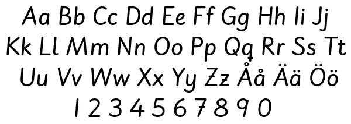

Vad Är Typsnitt
Läsbarhet påverkas av typsnitt, radlängd, storlek på texten [grad], radavstånd [kågel] samt avståndet på mellan bokstäver och ord. Utgångspunkt när ett namn väljer typsnitt för alla typer av texter måste alltid vara att texten ska vara lätt att läsa. Det spelar ingen roll om du har tusentals snyggs typsnitt (även kallad teckensnitt eller fonter) i din dator - du kommer inte att kunna använda alla för webben. Det finns två skäl till detta. Dels ör typsnitt som är lättlästa och snygga tryck eller utskrifter inte alltid lämpliga att läsas på en skärm. Dels är du som skapar av webbsidor beroende av vad användaren - den som ska se dina sidor på webben har får typsnitt installerade på sin dator. Det finns möjlighet att ladda ner typsnitt, men tekniken är ännu inte helt perfekt. Du har att ta hänsyn till dels vilka typsnitt som ger en bra läsbarhet på skärmen, dels att användarna kanske inte har ditt valda typsnitt på sin dator.
- Serif - Typsnitt med fötter
- Sans-Serif - Typsnitt utan fötter
- Monospace - Typsnitt där varje tecken upptar samma utrymme
- Fantasy - Utsmycklad typografi eller symboler som sällan används
- Cursive - Används sällan eftersom det är svårläst
- color = Textfärg t.ex #ffffff
- font-family = Typsnittsfamilj:Geneva, Arial, Helvetica, Sans-Serif
- font-size = Teckenstorlek: t.ex 24px;
- font-style = Vikt, normal, italic och oblique
- font-weight = Typsnitts tjocklek t.ex bold
- line-weight = Typhöjd - avståndet mellan en rads baslinje där bokstäverna sitter, och nästa rads baslinje
- Margin-left/right = Marginalernas storlekar
- text-align = Vertikal justering t.ex center